Bahan Yang Diperlukan
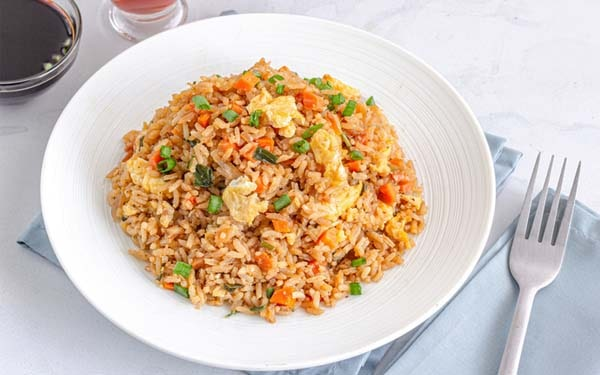
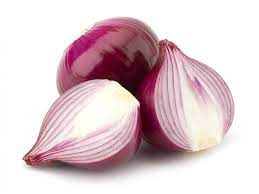
bawang merah 3 siung
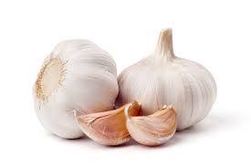
bawang putih 2 siung
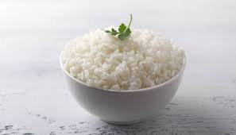
nasi secukupnya
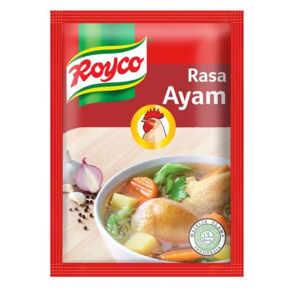
kaldu ayam bubuk
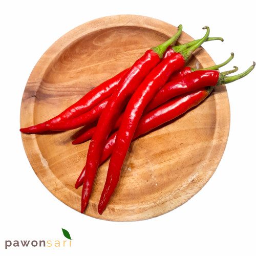
cabai sesuai keinginan
minyak secukupnya
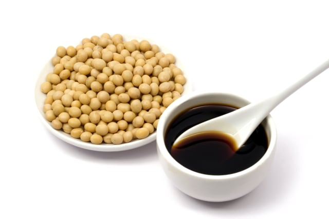
Lkecap manis dan asin
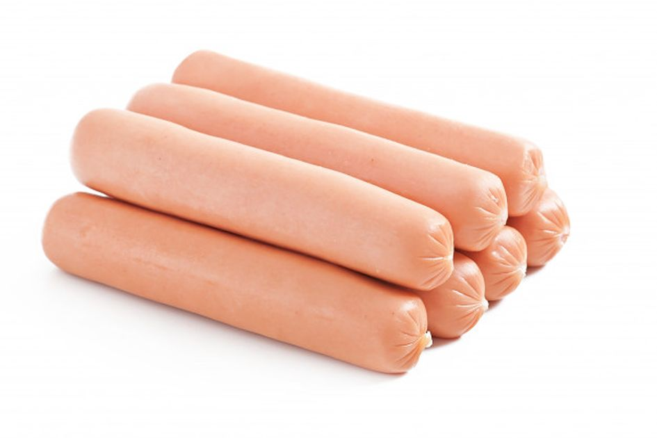
sosis sesuai keinginan
Cara Masak
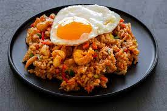
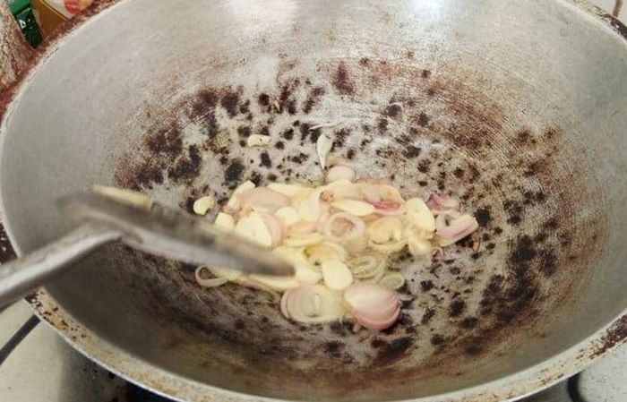
Tumis bawang putih hingga harum. Tambahkan telur lalu orak-arik. lakukan hingga aromanya tercium
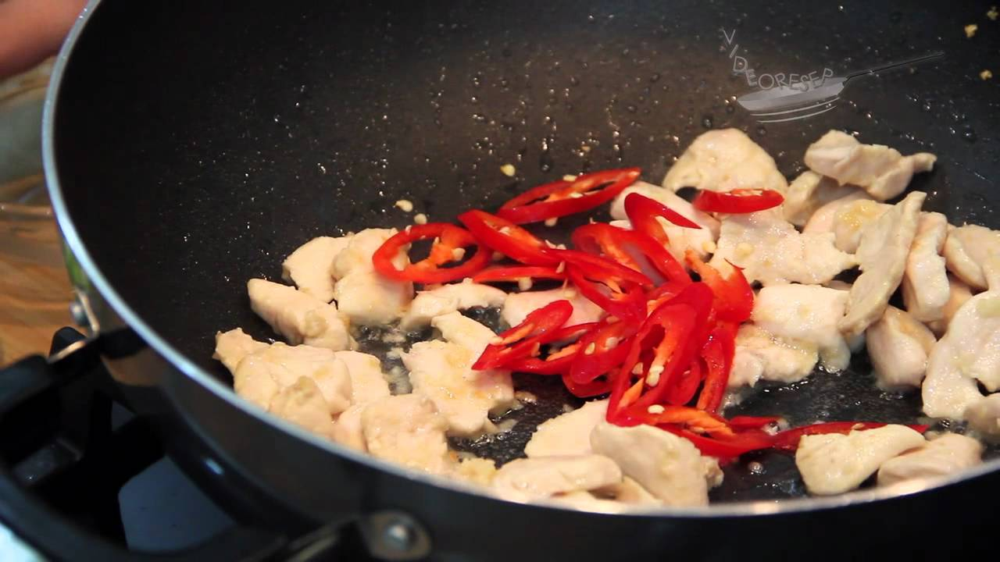
Kemudian tambahkan ayam yang telah dicincang halus dan sosis. Masukkan daun bawang. Tumis lagi.
Masukkan nasi lalu aduk hingga rata. Tambahkan garam, merica, kecap ikan, dan penyedap rasa. Aduk rata sampai aroma sedap atau harum tercium.
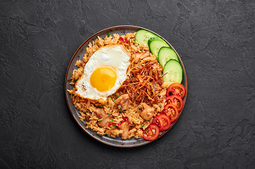
Pindahkan nasi goreng putih pada piring. Taburi bawang merah goreng sebagai tambahan.